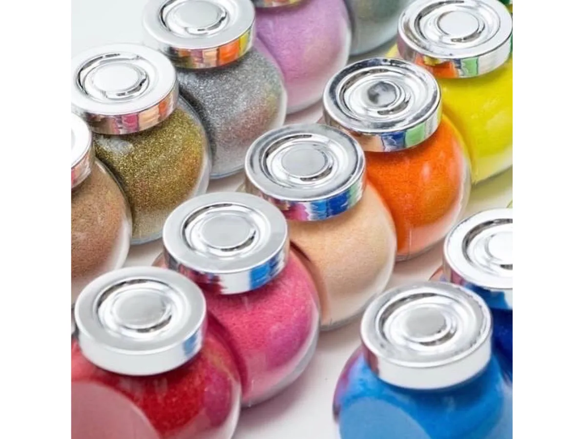

ダイソーには、サンドアートを手軽に始められる材料がひと通り揃っています。カラーサンドから容器、飾り、道具まですべて110円〜でそろうのが魅力。この記事では、ダイソーで買えるものを売り場別にまとめ、選び方のコツと注意点まで解説します。
ダイソーで揃う材料（売り場別）
カラーサンド／デコレーションサンド
複数色がパックになったものや単色のものがあります。製菓コーナー・ハーバリウムコーナー・クラフトコーナーに置かれていることが多いです。季節によっては「デコレーションサンド」の名前で並ぶこともあります。
ガラス容器・ボトル
小さめのグラス、コルク付きの小瓶、円柱型ボトルなど。口が広いグラスは砂を入れやすく、初心者向きです。食器・インテリア・ハーバリウムコーナーをチェック。
飾り（トッピング）
ビーズ、クリスタルストーン、造花、ミニオーナメント、貝殻など。ハロウィン・クリスマスなど季節もののパーツも豊富で、作品の主役になります。
あると便利な道具
小さめのスプーン、割り箸や竹串（模様づけ）、じょうご（細口ボトル用）。これらがあると作業がきれいに進みます。
ダイソーで買うときのコツ・注意点
- 品揃えは店舗・時期で変わります。大型店ほど種類が豊富で、季節イベント前は飾りが充実します。
- 粒がやや粗いことがあるため、細かい模様を作りたいときは通販の細かいカラーサンドと併用すると仕上がりが安定します。
- 口が広い容器を選ぶと砂が入れやすく、失敗しにくいです。
- 色は3〜4色にしぼると、濁らず上品にまとまります。
ダイソーの材料だけでどこまでできる？
結論、ダイソーの材料だけでも十分楽しめます。グラス＋3色の砂＋飾りがあれば、しましまやグラデーションの作品が作れます。ただし「層がまっすぐにならない」「色の境目が濁る」など、細かな仕上がりは道具やコツ次第。きれいに見せる配色は色の選び方・配色のコツ、容器選びは容器・瓶の選び方も参考にどうぞ。
「自分で作るとうまくいかない…」ならオンライン体験が近道
100均の材料でも手軽に始められますが、いざ作ると「砂が崩れる・色が濁る・道具が揃わない・思ったよりきれいにできない」とつまずく方が多いのも事実です。材料をあれこれ買い集めたのに結局うまくいかず、余った砂が引き出しに眠っている——そんな“あるある”も少なくありません。
そこでおすすめなのが、nicolonのオンラインサンドアート体験。買い出しも準備も不要で、届いたその日から失敗なくきれいな作品が作れます。
- 材料キットが届く：色砂・容器・飾り・道具まで一式そろって郵送。買い揃える手間も、何を選べばいいかの迷いもゼロ。
- 講師が画面越しに生サポート：色の重ね方・崩さないコツをその場で教わりながら作るので、不器用さんでも必ずきれいに仕上がります。
- 全国どこでも・自宅で：3歳のお子様から大人まで、おうちにいながら本格的な体験ができます。
「まず試したい」なら自宅でサンドアート体験（2,000円・材料キット付き・全国オンラインOK）、くわしくは全国どこでもオンライン体験やオンライン体験ページへ。対面がよい方は出張ワークショップもご相談ください。
よくある質問
Q. ダイソーのどのコーナーにカラーサンドがありますか？
A. 製菓・ハーバリウム・クラフトコーナーにあることが多いです。店舗により異なるため、見つからない場合は店員さんに「カラーサンド（デコレーションサンド）」の場所を尋ねると確実です。
Q. ダイソーの材料だけで作れますか？
A. はい。カラーサンド・容器・飾り・道具が揃うので、ダイソーの材料だけでも十分楽しめます。細かい模様にこだわる場合は通販の細かい砂と併用がおすすめです。
Q. ダイソーとセリアはどちらがいいですか？
A. 品数や季節パーツの豊富さならダイソー、やさしい色合いやデザイン性ならセリアが選ばれます。両方を見比べるのもおすすめです。
Q. きれいに作れず崩れてしまいます。
A. 粒が粗い・道具が足りない・詰め方が甘いことが原因のことが多いです。細かい砂を使い、上までしっかり詰めると安定します。確実にきれいに作りたい方は、キット付きのオンライン体験もご検討ください。
失敗なしで作るなら｜オンライン体験・キットのご相談
24時間以内に返信いたします。ご希望に合わせて最適なプランをご提案します。

原野 玲未REMI HARANO
日本サンドアート協会 認定講師 / Webデザイナー
福岡県在住、5児の母。年間100件以上の出張ワークショップ・オンラインレッスンを開催しています。